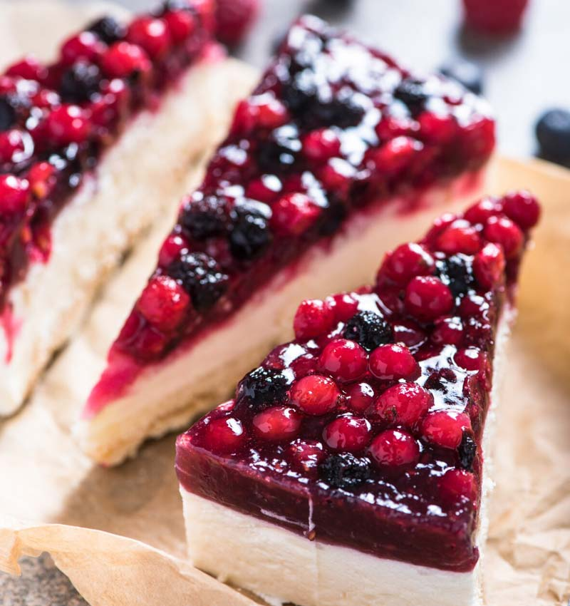

Cheesecake

Esta receta de Cheesecake nos hacen querer comerla todos los días. En esta ocasión compartimos la receta para preparar un exquisito y fresco Cheesecake clásico cubierto con una deliciosa reducción de frutos rojos
Ingredientes:
Procedimiento:
- Triturar las galletitas, colocar en un bowl junto con la manteca fundida y mezclar hasta incorporar.
- Colocar la mezcla en un molde desmontable (24cm), colocar papel manteca en la base y enmantecar.
- En un bowl colocar el queso crema, agregar azúcar, ralladura de limón, esencia de vainilla, jugo de limón, maicena y mezclar para incorporar.
- Incorporar los huevos de a uno, sin batir para no generar aire en la mezcla.
- Agregar la crema de leche y mezclar para incorporar.
- Verter la mezcla en el molde sobre la base de galletitas y emparejar.
- Llevar a horno precalentado a temperatura mínima (150ºC) durante 40 minutos.
- Dejar enfriar dentro del horno (1 hora aproximadamente) y luego refrigerar un par de hora para que tome más firmeza y la disfrutes bien fresca!
Para la cobertura:
- Sobre una sartén a fuego medio colocar los frutos rojos, azúcar y jugo de limón. Cocinar hasta que espese (unos 15 min.), revolviendo esporádicamente.
- Cubrir el Cheesecake con la reducción de frutos, porcionar y a disfrutar!! 